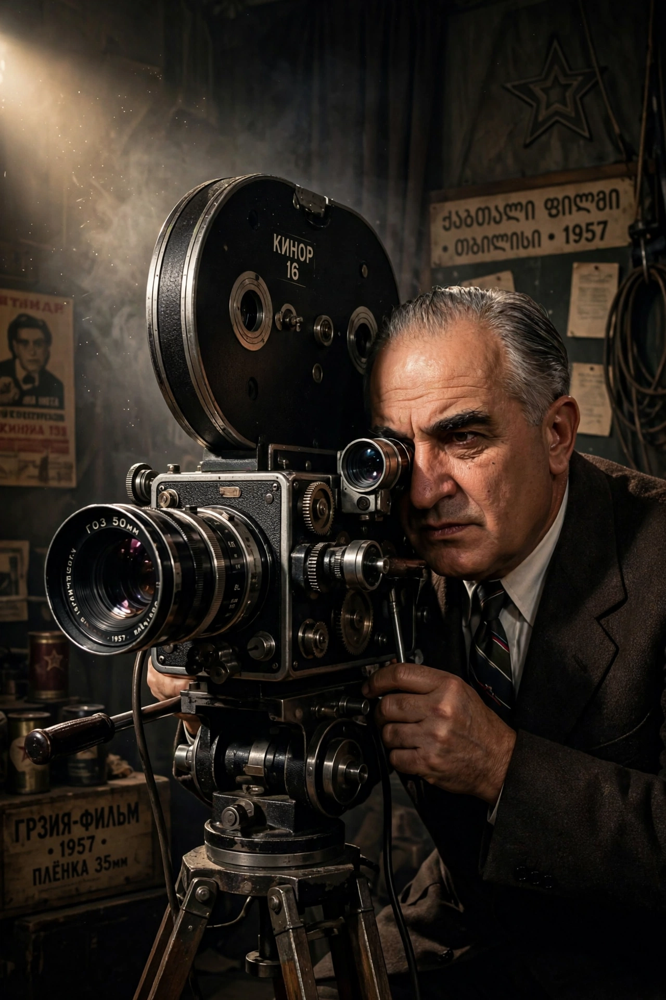

Mikhail Kalatozov
| Mikhail Kalatozov | |
|---|---|
 | |
| Born | Mikheil Kalatozishvili 28 December 1903 Tiflis, Russian Empire (now Tbilisi, Georgia) |
| Died | 26 March 1973 (aged 69) Moscow, Soviet Union |
| Occupation | Film director, cinematographer, screenwriter |
| Years active | 1928–1971 |
| Notable work | The Cranes Are Flying (1957), Letter Never Sent (1960), I Am Cuba (1964) |
Mikhail Konstantinovich Kalatozov (Russian: Михаил Константинович Калатозов; born Mikheil Kalatozishvili; 28 December 1903 – 26 March 1973) was a Soviet film director of Georgian origin, best known for The Cranes Are Flying (1957), the only Soviet film to win the Palme d'Or at the Cannes Film Festival. His collaborations with cinematographer Sergei Urusevsky produced some of the most virtuosic camerawork in film history.
Early career
Kalatozov began as a cameraman and director in the Georgian film industry, making the striking documentary-style feature Salt for Svanetia (1930). He later worked as a studio administrator and, during the war, directed the socialist realist drama Valeri Chkalov (1941) and served as the Soviet film industry's representative in Hollywood.
The Thaw masterpieces
After Stalin's death, Kalatozov and Urusevsky made a trilogy of films famous for their fluid, hand-held camerawork and crane shots. The Cranes Are Flying (1957), starring Tatyana Samoilova and Aleksey Batalov, tells of a young couple separated by the Second World War; its emotional directness broke with the conventions of the Stalin era. Letter Never Sent (1960) follows a doomed geological expedition in Siberia, and I Am Cuba (1964), a Soviet-Cuban co-production, contains celebrated long takes, including a shot that travels from a rooftop down into a swimming pool. Neglected on release, I Am Cuba was rediscovered in the 1990s and championed by Martin Scorsese and Francis Ford Coppola.
Later work
His final film, The Red Tent (1969), an Italian-Soviet co-production about the 1928 Italia airship disaster, starred Sean Connery, Claudia Cardinale and Peter Finch. Kalatozov died in Moscow in 1973. His son Georgi and grandson Mikheil Kalatozishvili also became film directors. Directors of his generation who emerged from the Thaw, such as Grigori Chukhrai, similarly redefined Soviet cinema.